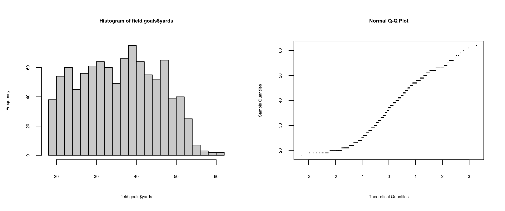

程式設計與應用
第十八章：統計檢定
實踐大學
2026-06-08
假設受審
本章的形狀
「新藥贏過安慰劑嗎？」「改版賣得更多嗎？」「這個策略勝過指數嗎？」——立假設、設計實驗、收資料、做檢定。兩大半場：
- 連續資料——常態理論檢定，以及無母數對應版本；
- 離散資料——比例、二項試驗、列聯表。
Warning
書中的免責聲明在此同樣適用： 本講義提醒你何時、如何在 R 裡跑各個檢定——但取代不了一門正規的統計課：公式從哪來、何時可安全使用。
連續資料：常態理論檢定
t.test：單樣本對假設平均
t.test(x, y=NULL, alternative=c("two.sided","less","greater"), mu=0, paired=FALSE, var.equal=FALSE, conf.level=0.95)——y=NULL 時把單一向量與 mu 比較；var.equal 在合併變異數與 Welch 法之間選擇。假設 H 型輪胎「應該」撐 9 小時：
[1] 10.182
One Sample t-test
data: times.to.failure.h
t = 0.75694, df = 9, p-value = 0.4684
alternative hypothesis: true mean is not equal to 9
95 percent confidence interval:
6.649536 13.714464
sample estimates:
mean of x
10.182 解讀：統計量 t、自由度、p 值 0.4684——對立假設（「真實平均 ≠ 9」）不成立；證據不足以說平均偏離 9。報表以 95% 信賴區間與樣本平均收尾。
t.test：雙樣本
三種輪胎共享速度等級 S——理應壽命相同。先比 E 與 D、再比 E 與 B：
times.to.failure.e <- subset(tires.sus,
Tire_Type=="E" & Speed_At_Failure_km_h==180)$Time_To_Failure
times.to.failure.d <- subset(tires.sus,
Tire_Type=="D" & Speed_At_Failure_km_h==180)$Time_To_Failure
times.to.failure.b <- subset(tires.sus,
Tire_Type=="B" & Speed_At_Failure_km_h==180)$Time_To_Failure
t.test(times.to.failure.e, times.to.failure.d)
Welch Two Sample t-test
data: times.to.failure.e and times.to.failure.d
t = -2.5042, df = 8.961, p-value = 0.03373
alternative hypothesis: true difference in means is not equal to 0
95 percent confidence interval:
-0.82222528 -0.04148901
sample estimates:
mean of x mean of y
4.321000 4.752857 [1] 0.1639728E 對 D：95% 下顯著（p = 0.034）。E 對 B：不顯著（p = 0.164）——注意 R 從不替你說「顯著」，p 值要自己讀。
t.test：公式介面
資料在資料框、組別在因子時：t.test(formula, data, subset, na.action)。球評老說戶外踢球更難——成功射門的距離有差嗎？
Welch Two Sample t-test
data: yards by outside
t = 1.1259, df = 319.43, p-value = 0.261
alternative hypothesis: true difference in means between group FALSE and group TRUE is not equal to 0
95 percent confidence interval:
-0.6851121 2.5185711
sample estimates:
mean in group FALSE mean in group TRUE
35.31707 34.40034 室內平均長約一碼——不顯著（p = 0.26）。失手的（data=bad）：p = 0.23。整體嘗試：p = 0.12。球評們依舊拿不出證據。
成對資料
每個受試者兩筆觀測（前／後）就用成對 t 檢定：paired=TRUE。SPEC 的 CPU 基準測試替每台機器報告基準與最佳化兩個成績——按機器成對。單晶片雙核心系統：
Paired t-test
data: subset(SPECint2006, Num.Chips == 1 & Num.Cores == 2)$Baseline and subset(SPECint2006, Num.Chips == 1 & Num.Cores == 2)$Result
t = -21.804, df = 111, p-value < 2.2e-16
alternative hypothesis: true mean difference is not equal to 0
95 percent confidence interval:
-1.957837 -1.631627
sample estimates:
mean difference
-1.794732 壓倒性顯著——不意外：調校有用，而且交最佳化成績是自願的（調不好的多半就不交了）。
比較變異數：var.test 與 bartlett.test
var.test(x, y, ratio=1, alternative=, conf.level=)（或公式形式）對兩個常態母體的變異數做 F 檢定。bartlett.test(x, g)（或公式）檢驗各組變異數是否同質。
F test to compare two variances
data: yards by outside
F = 1.2432, num df = 252, denom df = 728, p-value = 0.03098
alternative hypothesis: true ratio of variances is not equal to 1
95 percent confidence interval:
1.019968 1.530612
sample estimates:
ratio of variances
1.243157
Bartlett test of homogeneity of variances
data: yards by outside
Bartlett's K-squared = 4.5808, df = 1, p-value = 0.03233兩個 p 值都約 0.03：室內外的變異數差異顯著——平均沒差，散布有差。
ANOVA：比較多組平均
變異數分析比較多組的平均（名字來自方法、不是結果！）。快速工具是 aov(formula, data, projections=, qr=, contrasts=)。2006 年美國死亡年齡按死因（mort06.smpl，作者從 CDC 檔案重編碼）：
Call:
aov(formula = age ~ Cause, data = mort06.smpl)
Terms:
Cause Residuals
Sum of Squares 15727886 72067515
Deg. of Freedom 9 243034
Residual standard error: 17.22012
Estimated effects may be unbalanced
29 observations deleted due to missingnessmodel.tables(aov(...)) 印出各水準效果（意外事故比總平均少 21.4 歲、他殺少 40.1、阿茲海默多 13.8……）。更微妙的例子——孕期增重按出生月份：
Call:
aov(formula = WTGAIN ~ DOB_MM, data = births2006.cln)
Terms:
DOB_MM Residuals
Sum of Squares 14777 73385301
Deg. of Freedom 1 351465
Residual standard error: 14.44986
Estimated effects may be unbalancedanova(lm(…))、oneway.test 與同伴
通常更好的路：先 lm 配適、再用 anova 取表——F 統計量與 p 值都在（大模型用 update 修改更省事；第二十章）：
Analysis of Variance Table
Response: age
Df Sum Sq Mean Sq F value Pr(>F)
Cause 9 15727886 1747543 5893.3 < 2.2e-16 ***
Residuals 243034 72067515 297
---
Signif. codes: 0 '***' 0.001 '**' 0.01 '*' 0.05 '.' 0.1 ' ' 1- 變異數不等？
oneway.test(formula, data, var.equal=FALSE)——Welch 思想的推廣。 aov的其他配件：proj（投影）、TukeyHSD（成對水準差的信賴區間）、se.contrast（對比的標準誤）。
成對 t 檢定
想知道哪些組不同、不只有沒有不同：pairwise.t.test(x, g, p.adjust.method=, pool.sd=, paired=, alternative=) 跑所有配對並校正多重檢定（預設 Holm 法）：
Pairwise comparisons using t tests with pooled SD
data: tires.sus$Time_To_Failure and tires.sus$Tire_Type
B C D E H
C 0.2219 - - - -
D 1.0000 0.5650 - - -
E 1.0000 0.0769 1.0000 - -
H 2.4e-07 0.0029 2.6e-05 1.9e-08 -
L 0.1147 1.0000 0.4408 0.0291 0.0019
P value adjustment method: holm C–L、D–L、D–E 無顯著差異；B–H、C–H、E–L 等則非常顯著……
檢驗常態性：shapiro.test
射門距離常態嗎？先用眼睛、再用 Shapiro-Wilk 檢定：
Shapiro-Wilk normality test
data: field.goals$yards
W = 0.97275, p-value = 1.309e-12
鐘形有了、Q-Q 也大致直線——但 p ≈ 10⁻¹²：很可能不常態。眼睛會騙人；檢定給數字。
任意分布：ks.test
Kolmogorov-Smirnov 檢定把向量與任何分布比較（y ＝資料向量、分布名稱或函數），或比較兩個向量：
Warning in ks.test.default(field.goals$yards, pnorm): ties should not be
present for the one-sample Kolmogorov-Smirnov test
Asymptotic one-sample Kolmogorov-Smirnov test
data: field.goals$yards
D = 1, p-value < 2.2e-16
alternative hypothesis: two-sided
Asymptotic two-sample Kolmogorov-Smirnov test
data: jitter(subset(SPECint2006, Num.Chips == 1 & Num.Cores == 2)$Baseline) and jitter(subset(SPECint2006, Num.Chips == 1 & Num.Cores == 2)$Result)
D = 0.20536, p-value = 0.01777
alternative hypothesis: two-sided「有同值」的警告本身就是線索——真常態的值幾乎不會撞值。（第二個檢定加 jitter 把警告壓掉。）基準與最佳化成績：不太可能來自同一分布（p = 0.012）。
相關檢定：cor.test
第十六章的 cor 給數字；cor.test(x, y, alternative=, method=, exact=, conf.level=)（或公式形式）給顯著性：
[1] 2.989378e-08[1] 0.2671036把第十三章「毒物與肺癌」的關係送審：
Pearson's product-moment correlation
data: air_on_site/Surface_Area and deaths_lung/Population
t = 3.4108, df = 39, p-value = 0.00152
alternative hypothesis: true correlation is not equal to 0
95 percent confidence interval:
0.2013723 0.6858402
sample estimates:
cor
0.4793273 顯著的正相關（p = 0.0015）——但別跳到因果：工業州可能同時在收入、醫療、吸菸率，甚至死因填寫習慣上不同。
連續資料：無母數檢定
wilcox.test
常態性可疑時，等級式檢定用一點檢定力換取穩健。Wilcoxon 檢定是 t 檢定的對應：統計量數遍所有配對中 y[j] < x[i] 的次數（分布相同時約一半）——沒有「單樣本對假設平均」的版本：
Wilcoxon rank sum exact test
data: times.to.failure.e and times.to.failure.d
W = 14.5, p-value = 0.04576
alternative hypothesis: true location shift is not equal to 0
Wilcoxon rank sum test with continuity correction
data: yards by outside
W = 62045, p-value = 0.393
alternative hypothesis: true location shift is not equal to 0對照 t 檢定的結果：E 對 D 在這裡差一點點不顯著（p = 0.0505）。有同值時改用常態近似（所以有警告）。
kruskal.test 與 fligner.test
- Kruskal-Wallis 等級和檢定——無母數版 ANOVA：
kruskal.test(formula, data)； - Fligner-Killeen（中位數）檢定——無母數的變異數比較：
fligner.test(formula, data)。
Kruskal-Wallis rank sum test
data: age by Cause
Kruskal-Wallis chi-squared = 34868, df = 9, p-value < 2.2e-16
Fligner-Killeen test of homogeneity of variances
data: age by Cause
Fligner-Killeen:med chi-squared = 15788, df = 9, p-value < 2.2e-16- 尺度參數的差異：
ansari.test(x, y, ...)（Ansari-Bradley）與mood.test(x, y, ...)（Mood）——皆有公式版。
離散資料
prop.test：比較比例
prop.test(x, n, p=NULL, alternative=, conf.level=, correct=) 檢驗各組成功比例是否相同（或等於給定值）。射門成功率室內外一樣嗎？先建成功／失敗表（剔除 8 次中止與 24 次被攔阻）、轉置、送檢：
FG good FG no
Both 53 14
In 152 24
Out 582 125
3-sample test for equality of proportions without continuity correction
data: field.goals.table.t
X-squared = 2.3298, df = 2, p-value = 0.312
alternative hypothesis: two.sided
sample estimates:
prop 1 prop 2 prop 3
0.7910448 0.8636364 0.8231966 p = 0.31：Both／In／Out 三組成功率無顯著差異。
binom.test：白努利試驗
一串只有兩種結果的相同試驗（丟硬幣）服從二項分布。binom.test(x, n, p=0.5, alternative=, conf.level=) 檢驗觀測到的成功次數。David Ortiz 2008 年打擊率 .264（416 打數 110 安）——若他「真實」是 .300 打者，打出 .264 以下的機率多大？
Exact binomial test
data: 110 and 416
number of successes = 110, number of trials = 416, p-value = 0.06174
alternative hypothesis: true probability of success is less than 0.3
95 percent confidence interval:
0.0000000 0.3023771
sample estimates:
probability of success
0.2644231 p = 0.062：約 6%。注意：這個 p 值是「至少偏到這麼遠（往指定方向）」的機率——alternative 要讀仔細。
fisher.test：精確的獨立性檢定
列聯表的假設是兩變數獨立。小表用 Fisher 精確檢定最好。引數：x（矩陣或因子）、y（x 為因子時的因子）、workspace、hybrid（>2×2 時用近似）、or（假設的勝算比）、alternative、conf.int／conf.level、simulate.p.value／B（蒙地卡羅）。2006 年 7 月的生產方式×性別：
C-section Vaginal
F 5326 12622
M 6067 13045
Fisher's Exact Test for Count Data
data: method.and.sex
p-value = 1.604e-05
alternative hypothesis: true odds ratio is not equal to 1
95 percent confidence interval:
0.8678345 0.9485129
sample estimates:
odds ratio
0.9072866 p 值極小：拒絕獨立——剖腹產率因性別而異（各性別中佔 46.7% 對 49.2%……更精確地說，勝算比 ≈ 0.91）。
雙胞胎的 fisher.test；chisq.test
只看雙胞胎，劇情反轉：
[1] 0.6699808p = 0.67：獨立是合理的。Fisher 檢定在大表上很昂貴——主力替代品是卡方檢定：把樣本與假設的機率比較（chisq.test(x, y=, correct=, p=, rescale.p=, simulate.p.value=, B=)）：
chisq.test：適合度與高維表
按星期幾的出生數——若每天等可能（預設的 p），週末的短缺可能是巧合嗎？
1 2 3 4 5 6 7
40274 62757 69775 70290 70164 68380 45683
Chi-squared test for given probabilities
data: births2006.byday
X-squared = 15873, df = 6, p-value < 2.2e-16斷然不是巧合（當然，樣本這麼大，什麼都顯著）。多維表也行——星期×月份：
Pearson's Chi-squared test
data: table(births2006.smpl$DOB_WK, births2006.smpl$DOB_MM)
X-squared = 4729.6, df = 66, p-value < 2.2e-16- 三方交互作用：
mantelhaen.test(x, y, z, ...)（Cochran-Mantel-Haenszel）。 - 二維表的對稱性：
mcnemar.test(x, y, correct=)。
friedman.test
Friedman 等級和檢定是雙因子 ANOVA 的無母數對應——friedman.test(y, groups, blocks)，或公式／表格形式：
Friedman rank sum test
data: method.and.sex.twins
Friedman chi-squared = 2, df = 1, p-value = 0.1573與卡方的判決一致：兩個分布很可能獨立。
版權聲明
版權。 本講義改編自 Joseph Adler 著、O’Reilly Media 出版之 R in a Nutshell: A Desktop Quick Reference（第二版）。原著作者與出版社保留一切權利。
僅限非商業用途。 本教材僅供教學使用，不得用於商業營利。
標示出處。 任何重製、散布或使用本教材，皆須妥善標註原始出處。

R in a Nutshell: A Desktop Quick Reference